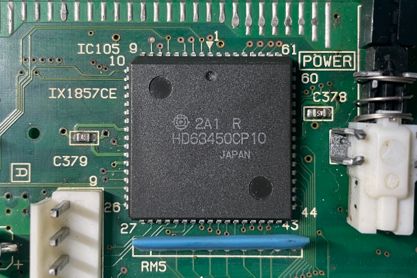

DMA "CPUを介さずデータ転送する魔法" 第1話

2024-02-17 投稿：
フェルン「フリーレン様、また魔導書(X68000関連の古文書)ですか。今度はどのような魔法なのでしょう？」
フリーレン「ダイレクト・メモリ・アクセス "CPUを介さずデータ転送する魔法" だよ。」
フェルン「変な魔法ばかり集めていますね。」
フリーレン「趣味だからね。」
：
X68000におけるDMA転送が成功した興奮により、変なテンションで始めてしまいました。
申し訳ありません。
折角ですので学習した内容をアウトプットさせていただきます。
第1回目となる今回は、まずコピペ(写経)でも良いので、いきなりDMA転送をやってみましょう。
僕の環境はGCC2 + LIBC 1.1.32Aです。
それ以外の方は取り合えずビルドしてみて、上手くいかない場合は適当に通るよう修正して下さい。
#include <stdio.h>
#include <iocslib.h>
// ↓↓DMAC(チャンネル#2)のレジスタ↓↓ // ↓↓各レジスタのざっくり説明(僕の勝手な解釈)↓↓
//
#define DMAC2CH_CSR (*((unsigned char*)0xE84080)) // 今の状態を色々教えてくれる所
#define DMAC2CH_DCR (*((unsigned char*)0xE84084)) // どんな風に使うのか設定する所
#define DMAC2CH_OCR (*((unsigned char*)0xE84085)) // どんな風に動作してほしいか設定する所
#define DMAC2CH_SCR (*((unsigned char*)0xE84086)) // 転送元と転送先が転送毎に移動するかどうか決める所
#define DMAC2CH_CCR (*((unsigned char*)0xE84087)) // いざ動かすときの操作レバーみたいな所
#define DMAC2CH_MTC (*((unsigned short*)0xE8408A)) // 転送回数を書いておく所(転送毎に減り0になると動作終了)
#define DMAC2CH_MAR (*((void**)0xE8408C)) // 転送元アドレスか転送先アドレス(どちらにするかはOCRで決める)
#define DMAC2CH_DAR (*((void**)0xE84094)) // 転送元アドレスか転送先アドレス(どちらにするかはOCRで決める)
#define DMAC2CH_MFC (*((unsigned char*)0xE840A9)) // MARのアクセスがユーザーなのかスーパーバイザなのか決める
#define DMAC2CH_CPR (*((unsigned char*)0xE840AD)) // チャンネル#2の優先順位を決める所
#define DMAC2CH_DFC (*((unsigned char*)0xE840B1)) // DARのアクセスがユーザーなのかスーパーバイザなのか決める
unsigned char src[9] = "X68000 Z"; // 転送元メモリ
unsigned char dst[20] = "HOGE_FUGA_PIYO_ABCD"; // 転送先メモリ
void main(void)
{
int ssp = B_SUPER(0);
DMAC2CH_CSR = 0xFF; // 使用前にフラグをクリアしないとエラーになる(CSRは1を書くとクリアするやつぽい)
DMAC2CH_DCR = 0x08; // 16ビットポートに設定(メモリ→メモリ転送は通常16ビットポートに設定するらしい)
DMAC2CH_OCR = 0x01; // MARからDARに転送する設定, 転送サイズを8ビットに設定
DMAC2CH_SCR = 0x05; // MARとDARのアドレス共に転送を行う度にインクリメントさせる設定
DMAC2CH_CCR = 0x00; // 転送開始ビットのクリア及び使わない機能に寝てもらう設定
DMAC2CH_MTC = 0x08; // 転送元が8文字なので転送回数を8回に設定
DMAC2CH_MAR = src; // 転送元のアドレス(OCRにてMARを転送元アドレスを示す所として設定した)
DMAC2CH_DAR = dst; // 転送先のアドレス(OCRにてDARを転送先アドレスを示す所として設定した)
DMAC2CH_MFC = 0x05; // MARが保持するアドレスへはスーパーバイザ状態でアクセスするように設定
DMAC2CH_CPR = 0x03; // 優先度は最低にしてみた(他チャンネル接続先のFDDやHDDやADPCMの方が重要だと思う)
DMAC2CH_DFC = 0x05; // DARが保持するアドレスへはスーパーバイザ状態でアクセスするように設定
printf("\n\n");
printf("--- DMA転送 実行前 ---\n");
printf("転送元 : %s\n", src);
printf("転送先 : %s\n", dst);
printf("\n");
printf("DMA転送開始!!\n");
DMAC2CH_CCR |= 0x80; // 転送開始
while(!(DMAC2CH_CSR & 0x90)); // 完了(bit7) または エラー(bit4)が1になったら抜ける
printf("\n");
printf("--- DMA転送 実行後 ---\n");
printf("転送元 : %s\n", src);
printf("転送先 : %s\n", dst);
printf("\n");
B_SUPER(ssp);
}
実行すると転送元と転送先が同じ文字列になるはずです。
では、実行。
実行結果：
--- DMA転送 実行前 ---
転送元 : X68000 Z
転送先 : HOGE_FUGA_PIYO_ABCD
DMA転送開始!!
--- DMA転送 実行後 ---
転送元 : X68000 Z
転送先 : X68000 ZA_PIYO_ABCD
あ...？あれっ？？何？？？ "X68000 ZA_PIYO_ABCD" って？！
あっ！そっか～！null文字かぁ～！！ (わざとらしい？w)
そんな訳で、転送回数を指定するレジスタであるMTCレジスタへの設定値を変更してみます。
変更前：
DMAC2CH_MTC = 0x08; // 転送元が8文字なので転送回数を8回に設定
変更後：
DMAC2CH_MTC = 0x09; // 転送元が8文字なので転送回数を9回に設定(8文字 + null文字)
修正が終わったら再度、コンパイルして実行してみましょう。
実行結果(修正後)：
--- DMA転送 実行前 ---
転送元 : X68000 Z
転送先 : HOGE_FUGA_PIYO_ABCD
DMA転送開始!!
--- DMA転送 実行後 ---
転送元 : X68000 Z
転送先 : X68000 Z
よし！大成功ですね！！
今回は、とにかくDMAを触ってみることを目的として、転送回数を変更して動作を確認しました。
次回は、X68000(Z)ならではの事情も交えつつ、もっと深掘りしてみたいと思います。
レジスタ一覧、及び詳細を知りたい場合は、以下に有志の方が書いてくれていますので見てみましょう。
https://gamesx.com/wiki/doku.php?id=x68000:dmac
ヤフオク等で運良く「Inside X68000」という古文書を入手できれば、これが日本語で分かりやすいです。
僕も主に「Inside X68000」で学習しました。
COCORO BOOKSで手に入るサービスマニュアル(DMAの事は少ししか載ってませんが)も参考になります。
HD63450のデータシート(X68k的な事はもちろん載っていませんが)も可能であれば見ておきたいですね。
：
フリーレン「原理がわからないまま使っているから応用ができないってこと。メモリ→メモリ転送しかできない。」
シュタルク「なるほど。」
本日のまとめ：魔法は、自由だ。
次回予告
次回は、そもそもDMAとは何であるのかを見ていきましょう。
また、X68000に搭載されているDMAコントローラ(63450)の仕様、及び、X68000上でどのように実装されているのかについても確認していきます。
Link
・第1話 はこちら
・第2話 はこちら ← NEXT
・第3話 はこちら
・第4話 はこちら
・第5話 はこちら
Archive Note
こちらは X68000 Z コミュニティサイト(Z-CLUB) 過去投稿を修正加筆したものです。
基本的に当時の状況に基づいた内容になっています。
元投稿：https://dev.zuiki.com/project-z/community/post/detail/940
[EOF]